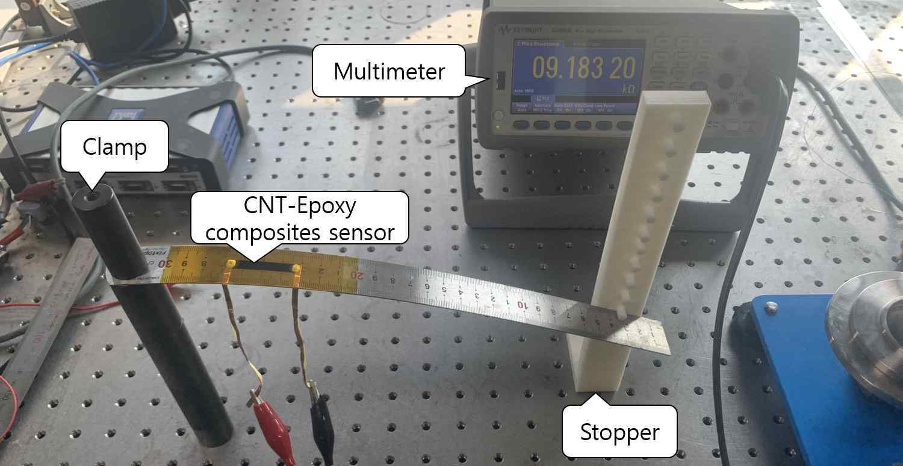
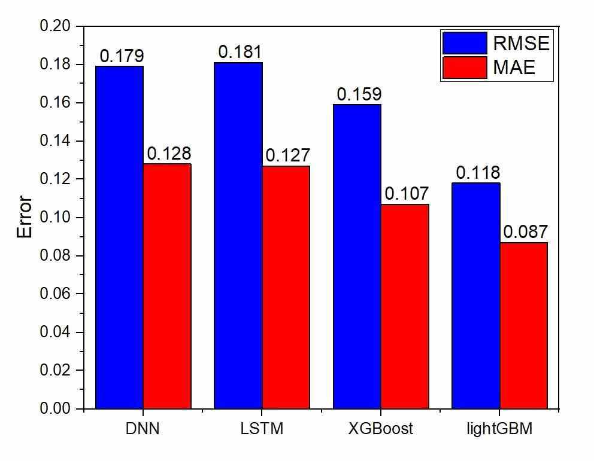
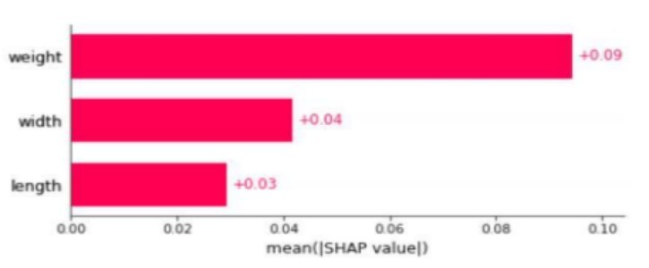
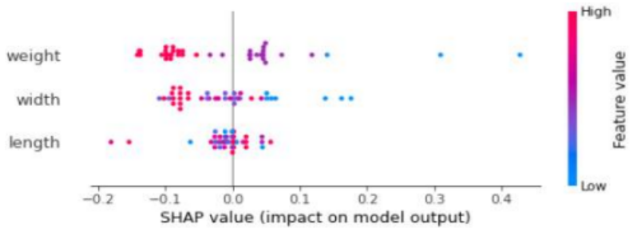
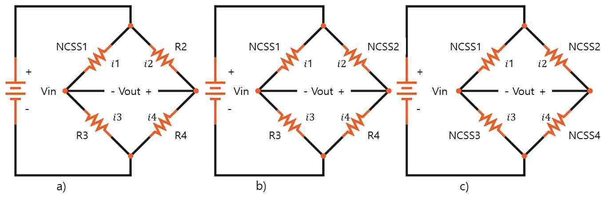
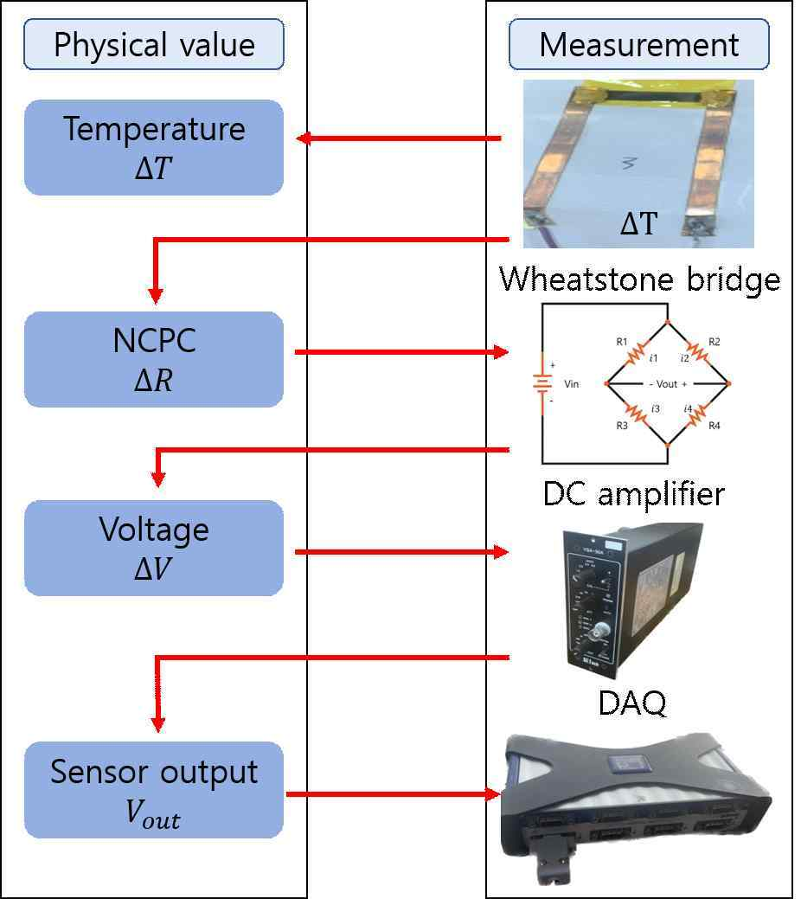
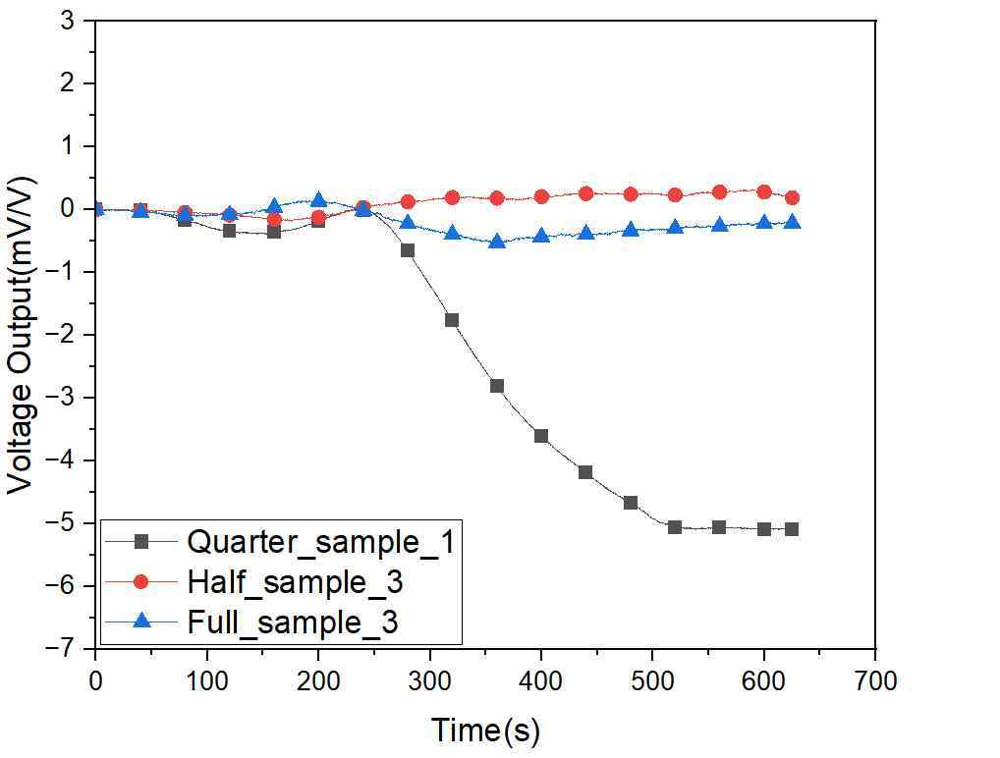
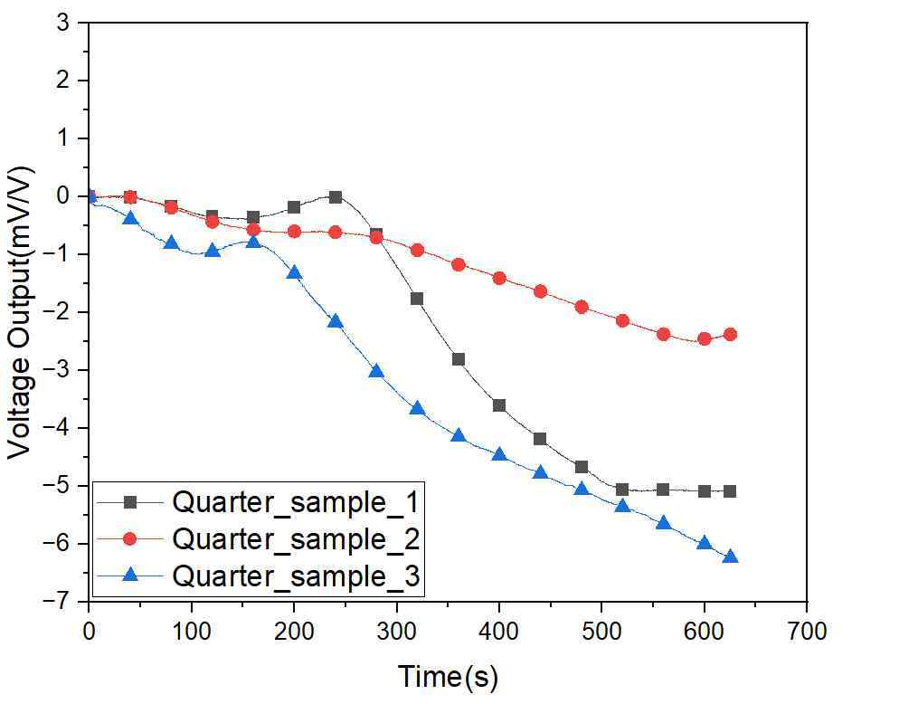
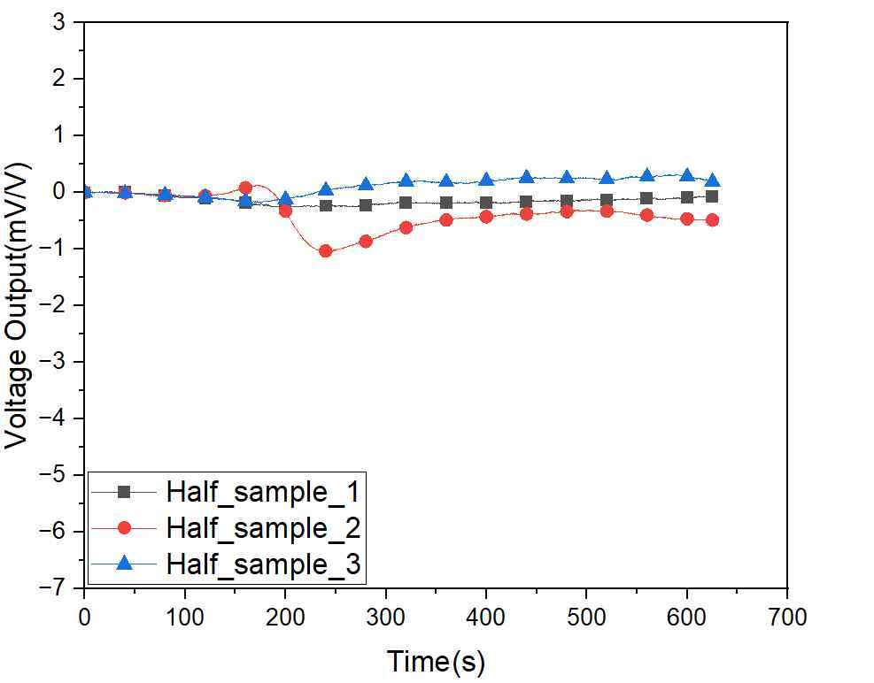
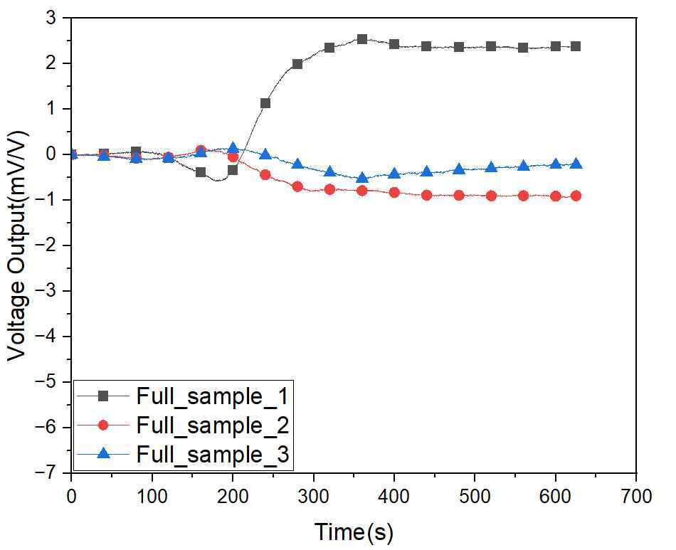

직접 제작하고 계측
몰딩과 브러싱을 결합해 약 100개의 센서 시편을 제작하고 전체 약 2,400개의 데이터를 수집했습니다. CNT 함량, 길이, 너비를 입력으로 게이지 계수를 분석했습니다.
PROJECT 05 / SENSOR / MASTER’S RESEARCH
센서의 형상·조성과 감도 사이의 관계를 분석하고, 브리지 회로에 따른 출력 변동을 비교했습니다.
01 / CONTEXT
CNT/Epoxy 센서의 형상과 조성에 따라 감도가 어떻게 달라지는지, 온도에 따른 출력 변동을 회로 구성으로 줄일 수 있는지 연구했습니다.
02 / APPROACH
몰딩과 브러싱을 결합해 약 100개의 센서 시편을 제작하고 전체 약 2,400개의 데이터를 수집했습니다. CNT 함량, 길이, 너비를 입력으로 게이지 계수를 분석했습니다.
DNN, LSTM, XGBoost, LightGBM을 비교했습니다. 제공된 비교에서 LightGBM의 RMSE와 MAE가 가장 낮았으며, SHAP 평균 절대값 기여도는 CNT 함량, 너비, 길이 순이었습니다.
Quarter, Half, Full Wheatstone bridge를 구성했습니다. 신호를 1,000배 증폭·필터링한 뒤 DAQ로 수집해 출력 변동을 비교했습니다.
03 / VERIFICATION
분석 범위에서 센서 너비가 작을수록 예측 감도가 증가하는 경향을 확인했습니다. 온도 보상 실험에서는 Half와 Full의 출력 변동이 Quarter보다 작았으며, 해당 실험에서 Half가 상대적으로 안정적이었습니다.
04 / SCOPE
SHAP 기여도는 모델 예측에 대한 설명이며 물리적 인과관계의 입증이 아닙니다. 관찰 결과는 해당 시편과 실험 조건의 범위에서 해석했습니다.
전체 수집 데이터는 약 2,400개이며, 개별 모델 비교에 사용된 학습 데이터 500개와 테스트 데이터 50개와는 구분됩니다.
사전 온도 의존성 실험은 20~90℃, 브리지 보상 실험은 20~80℃에서 진행했습니다. Quarter는 시편 3개, Half는 3쌍(6개), Full은 3세트(12개)를 비교했습니다. 보상 실험에서는 별도 실시간 온도 측정 없이 시간에 따른 선형 온도 변화를 가정했습니다.
논문 Fig. V-7은 각 타입에서 가장 성능이 좋은 데이터를 선택한 결과로, Quarter_sample_1, Half_sample_3, Full_sample_3을 비교했습니다. 전체 평균이나 모든 조건에 대한 성능을 의미하지 않습니다.
머신러닝-SHAP value를 활용한 탄소 나노 전왜성 센서의 형상설계 및 온도보상 연구. 부경대학교 대학원 기계설계공학과, 공학석사 학위논문, 2023년 2월.
PROJECT MATERIALS
제작 구성과 실제 결과를
프로젝트 자료로 살펴봅니다.

센서 시편에 일정한 변형량을 주고 멀티미터로 변형 전후의 저항을 측정한 구성입니다. 형상·조성과 감도의 관계를 분석하는 데 사용했습니다.
석사학위논문 Fig. IV-3 · 본문 37쪽
모델별 RMSE·MAE 비교. 해당 비교는 학습 500개·테스트 50개 조건이며, 전체 수집량 약 2,400개와 구분합니다. 지표값을 백분율 오차율로 해석하지 않습니다.
석사학위논문 Fig. IV-4 · 본문 40쪽
평균 절대 SHAP 값에 따른 예측 기여도. 원본의 weight는 CNT 함량(wt%)을 뜻합니다. 기여도는 물리적 인과관계의 입증이 아닙니다.
제공 포트폴리오 13쪽 수록 자료
변수별 SHAP 값 분포. 색은 입력값의 상대적 크기를, 가로축은 모델 출력에 대한 기여를 나타냅니다. 분석한 데이터 범위 내에서 해석합니다.
제공 포트폴리오 13쪽 수록 자료TEMPERATURE COMPENSATION
20~80℃의 보상 실험에서 Quarter, Half, Full bridge의 출력 변화를 비교했습니다. 보상 실험 중 온도를 별도로 실시간 측정하지 않았으며, 시간에 따른 선형 온도 변화를 가정했습니다.

온도 보상에 사용한 세 가지 브리지 구성. 센서 저항과 온도에 따른 저항 변화가 같다는 가정에서 회로 구성을 비교했습니다.

센서를 오븐에서 20~80℃로 가열하고, 브리지 출력을 1,000배 증폭·필터링한 뒤 DAQ로 수집했습니다.

타입별로 가장 성능이 좋은 데이터를 선택한 비교이며, 전체 평균이 아닙니다. 선택된 시편은 Quarter_sample_1, Half_sample_3, Full_sample_3입니다. 가로축은 시간(s), 세로축은 Voltage Output(mV/V)입니다.
동일한 시간 축과 출력 단위로 시편별 차이를 확인할 수 있습니다.

Quarter: 시편 3개 각각의 결과. 가로축은 시간(s), 세로축은 출력(mV/V)입니다.

Half: 3쌍, 총 6개 시편을 사용했습니다. 같은 시편을 3회 반복한 결과가 아닙니다.

Full: 3세트, 총 12개 시편을 사용했습니다. 잔여 출력 변동은 센서별 온도 응답 편차로 해석했으며, 원인을 독립적으로 확정한 결과는 아닙니다.